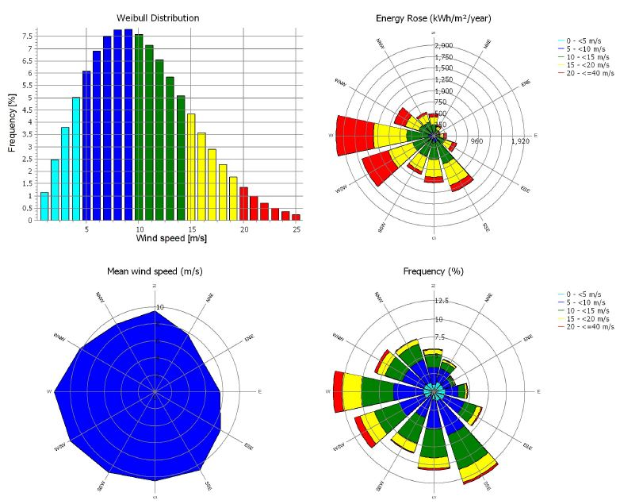
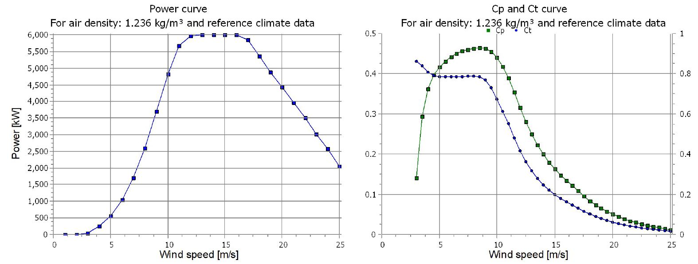
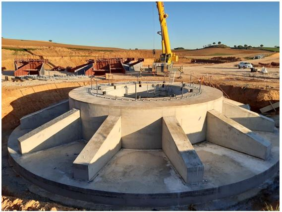
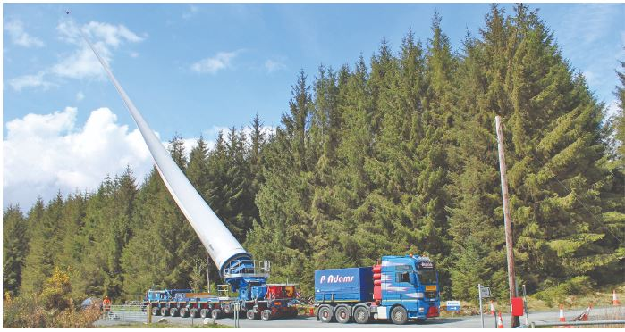
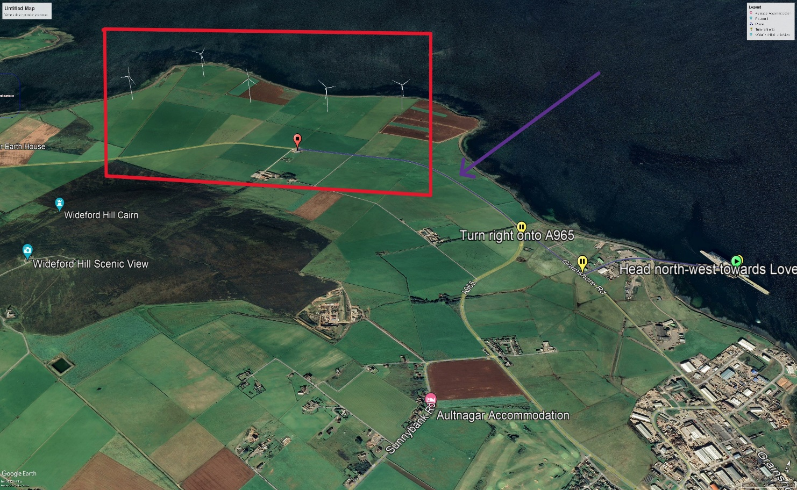
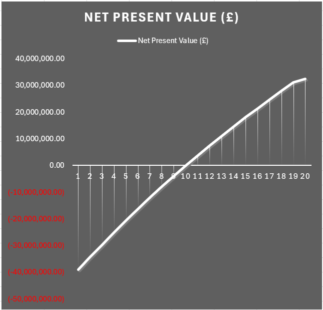

Question 02 — Wind power engineering
Can wind pay for an island?
Orkney has some of the strongest winds in Europe — 10.6 m/s average at hub height. This plan puts five Vestas V150-6.0 turbines at Quanterness: siting, noise, shadow flicker, visibility, transport logistics, and a 20-year community-owned business case, built in WindPRO.
Scroll ↓
The actual analysis, on the actual map.
These are not illustrations — they are the georeferenced WindPRO output layers from the study, exported from the project files. Toggle them over the real Quanterness site: predicted noise at 12 m/s, worst-case shadow flicker hours, and the zone of visual influence across the island.
Wind you can bank on.
Siting begins with the resource: Weibull-fitted wind statistics, an energy rose dominated by westerlies, and steady speeds above the turbine’s 3 m/s cut-in. The V150-6.0 was selected by comparing power curves against the site’s wind distribution — not by catalogue preference.


A turbine is easy. Getting it there isn’t.
The plan covers what desk studies usually skip: 73.7-metre blades shipped from Denmark to Kirkwall, specialist haulage under police escort, a new approved junction off the A965, access-road costing per turbine position, cable trenching, and grid connection — plus a three-year preconstruction programme with the critical path mapped in MS Project.



And the number that decides everything.
Twenty years of cash flows against £43.9M capital expenditure, under a Contract for Difference. The project breaks even at year 10–11 and finishes with a £32.5M net present value — profits retained by the Orkney community that hosts it.


Original files
The report plus the actual Google Earth layers — open the .kmz files in Google Earth.
Full report — Tailored Approach Plan for a Wind Farm.docx · 6 MB Site layout with 3D turbine models.kmz · 0.3 MB Noise decibel layer.kmz Shadow flicker layer.kmz Zones of visual influence layer.kmz Access road layout.kmz